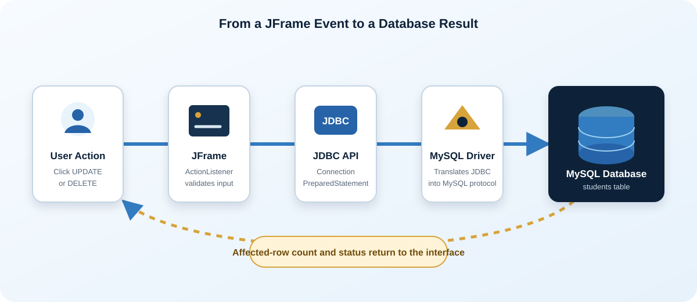
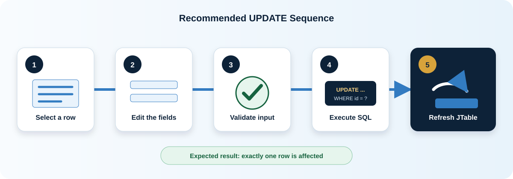
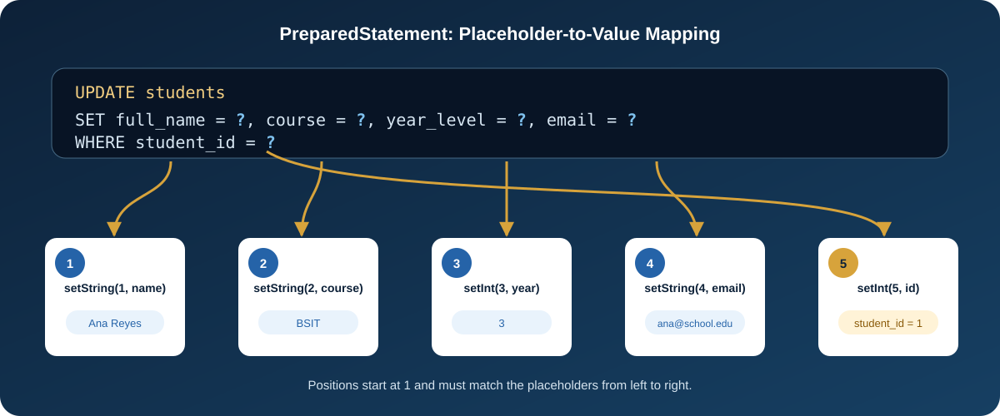
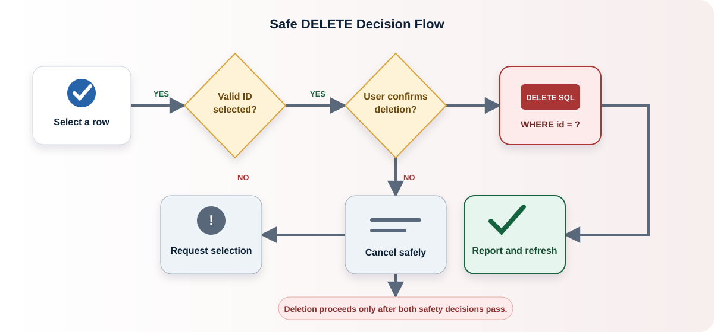
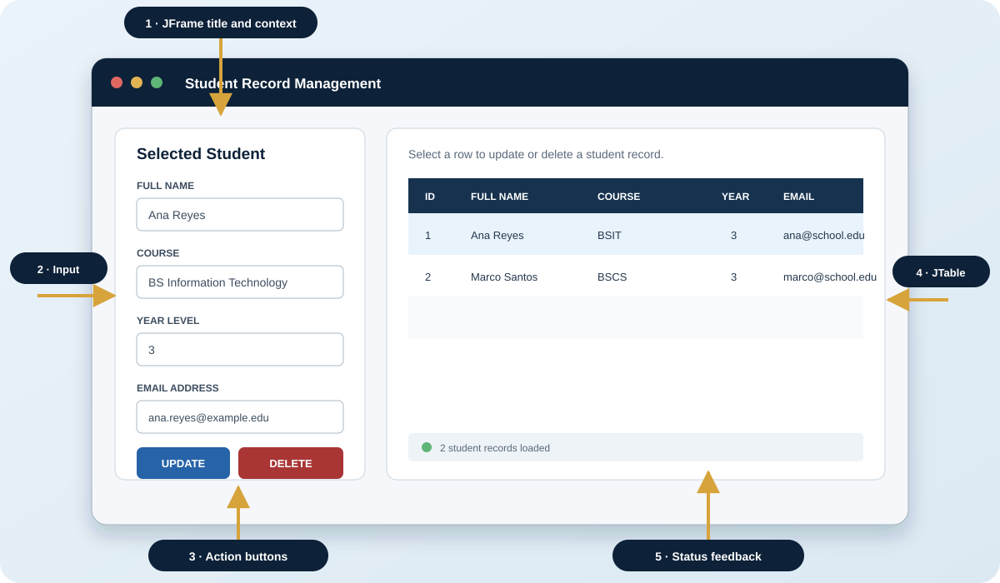
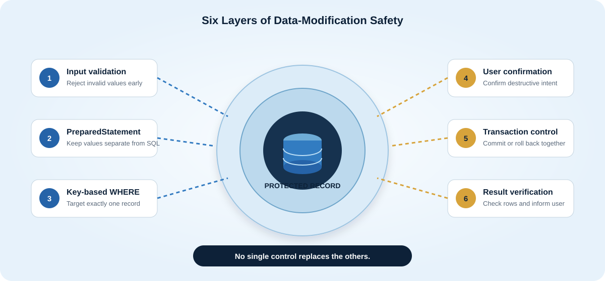

Learning overview
What students will learn
Database applications must do more than display records. They must also allow authorized users to correct information and remove records that are no longer required. This lesson connects a Java Swing interface to MySQL through JDBC and applies safe, parameterized SQL statements.
Explain
Describe how a JFrame event travels through JDBC to the database.
Construct
Write parameterized UPDATE and DELETE statements.
Integrate
Connect Swing buttons, text fields, and a JTable to JDBC methods.
Evaluate
Verify affected rows, handle exceptions, and protect user data.
Prerequisite knowledge
Students should already understand Java classes and methods, Swing components, basic SQL, primary keys, and the purpose of a database connection.
Core concepts
How JDBC connects the interface and database
JDBC means Java Database Connectivity. It is the standard Java API used to open a connection, send SQL commands, receive results, and close database resources.

Connection
An active session between the Java application and MySQL.
PreparedStatement
A precompiled SQL statement that accepts safe parameter values.
executeUpdate()
Executes INSERT, UPDATE, or DELETE and returns the number of affected rows.
SQLException
An exception containing database error details for diagnosis and handling.
The standard JDBC operation cycle
- 1Read and validate input
Get values from Swing components and reject incomplete or invalid data.
- 2Open the connection
Request a
Connectionfrom the reusable database utility class. - 3Prepare the SQL
Create a
PreparedStatementcontaining?placeholders. - 4Bind parameters
Supply each value with the correct setter method and parameter position.
- 5Execute and verify
Call
executeUpdate()and check whether exactly one row changed. - 6Refresh and close
Reload the JTable and let try-with-resources close JDBC objects.
Environment preparation
Set up the Java project
This module uses Java 17 or later, MySQL Server 8.0 or later, and MySQL Connector/J. The same concepts work in NetBeans, IntelliJ IDEA, or Eclipse.
Create the project
Create a Java Application named JdbcUpdateDeleteLesson.
Add the JDBC driver
Add MySQL Connector/J to the project libraries or build configuration.
Start MySQL
Confirm that MySQL is running and note its port, normally 3306.
Create two classes
Add DatabaseConnection and StudentManagementFrame.
<dependency>
<groupId>com.mysql</groupId>
<artifactId>mysql-connector-j</artifactId>
<version>26.7.0</version>
</dependency>Driver version note
Use a Connector/J version compatible with your Java and MySQL installation. When working offline, add the downloaded JAR through the IDE’s project library settings.
Database preparation
Create the practice database and table
The student_id column is the primary key. It uniquely identifies each record and is therefore the safest value to use in the WHERE clause.
CREATE DATABASE IF NOT EXISTS school_db;
USE school_db;
CREATE TABLE IF NOT EXISTS students (
student_id INT PRIMARY KEY AUTO_INCREMENT,
full_name VARCHAR(100) NOT NULL,
course VARCHAR(80) NOT NULL,
year_level INT NOT NULL,
email VARCHAR(120) NOT NULL UNIQUE
);
INSERT INTO students (full_name, course, year_level, email) VALUES
('Ana Reyes', 'BS Information Technology', 2, 'ana.reyes@example.edu'),
('Marco Santos', 'BS Computer Science', 3, 'marco.santos@example.edu');| student_id | full_name | course | year_level | |
|---|---|---|---|---|
| 1 | Ana Reyes | BS Information Technology | 2 | ana.reyes@example.edu |
| 2 | Marco Santos | BS Computer Science | 3 | marco.santos@example.edu |
Create the reusable connection class
import java.sql.Connection;
import java.sql.DriverManager;
import java.sql.SQLException;
public final class DatabaseConnection {
private static final String URL =
"jdbc:mysql://localhost:3306/school_db"
+ "?useSSL=false&allowPublicKeyRetrieval=true&serverTimezone=UTC";
private static final String USER = "root";
private static final String PASSWORD = "";
private DatabaseConnection() { }
public static Connection getConnection() throws SQLException {
return DriverManager.getConnection(URL, USER, PASSWORD);
}
}Explain the code: The URL identifies the server and database. DriverManager selects the matching JDBC driver. The method returns an open connection or throws SQLException if the connection fails. The useSSL=false setting is suitable only for a local classroom server; configure TLS correctly for deployed systems.
Data modification
Implement the UPDATE operation
An UPDATE statement changes existing values. It must include a precise WHERE clause; otherwise, every row in the table may be modified.

Concatenated SQL
"UPDATE students SET full_name='"
+ name + "' WHERE student_id=" + idMixes user input with SQL and is difficult to validate safely.
Parameterized SQL
UPDATE students
SET full_name=?, course=?, year_level=?, email=?
WHERE student_id=?Separates the SQL instruction from the supplied values.

private void updateStudent() {
Integer studentId = getSelectedStudentId();
if (studentId == null || !validateForm()) {
return;
}
String sql = "UPDATE students "
+ "SET full_name = ?, course = ?, year_level = ?, email = ? "
+ "WHERE student_id = ?";
try (Connection connection = DatabaseConnection.getConnection();
PreparedStatement statement = connection.prepareStatement(sql)) {
statement.setString(1, txtFullName.getText().trim());
statement.setString(2, txtCourse.getText().trim());
statement.setInt(3, Integer.parseInt(txtYearLevel.getText().trim()));
statement.setString(4, txtEmail.getText().trim());
statement.setInt(5, studentId);
int affectedRows = statement.executeUpdate();
if (affectedRows == 1) {
JOptionPane.showMessageDialog(this, "Student record updated successfully.");
loadStudents();
clearForm();
} else {
JOptionPane.showMessageDialog(this, "No matching record was updated.");
}
} catch (SQLException exception) {
showDatabaseError("Unable to update the record.", exception);
}
}Identify
Read the primary key from the selected JTable row.
Validate
Stop if the selection or form data is incomplete.
Bind
Match every placeholder with its correct Java value.
Verify
Expect affectedRows == 1 for one student.
Data removal
Implement the DELETE operation safely
A DELETE statement permanently removes a row. The interface should require a selected record and an explicit confirmation before executing the command.

Critical rule
Never run DELETE FROM students when the intention is to remove only one student. Use WHERE student_id = ? and verify the selected ID.
private void deleteStudent() {
Integer studentId = getSelectedStudentId();
if (studentId == null) {
JOptionPane.showMessageDialog(this, "Select a student record first.");
return;
}
int choice = JOptionPane.showConfirmDialog(
this,
"Permanently delete student ID " + studentId + "?",
"Confirm Record Deletion",
JOptionPane.YES_NO_OPTION,
JOptionPane.WARNING_MESSAGE
);
if (choice != JOptionPane.YES_OPTION) {
return;
}
String sql = "DELETE FROM students WHERE student_id = ?";
try (Connection connection = DatabaseConnection.getConnection();
PreparedStatement statement = connection.prepareStatement(sql)) {
statement.setInt(1, studentId);
int affectedRows = statement.executeUpdate();
if (affectedRows == 1) {
JOptionPane.showMessageDialog(this, "Student record deleted successfully.");
loadStudents();
clearForm();
} else {
JOptionPane.showMessageDialog(this, "The selected record no longer exists.");
}
} catch (SQLException exception) {
showDatabaseError("Unable to delete the record.", exception);
}
}Why is a confirmation dialog not enough by itself?
Reveal answer
The SQL must still target the correct primary key. A user may confirm a dangerous command, so the application must also use a precise WHERE clause, validate the selected ID, and check the affected-row count.
Interface integration
Connect the operations to JFrame
The JFrame acts as the presentation layer. It collects data, displays records, and calls database methods when the user activates a button.

Connect button events
btnUpdate.addActionListener(event -> updateStudent());
btnDelete.addActionListener(event -> deleteStudent());
btnClear.addActionListener(event -> clearForm());
studentTable.getSelectionModel().addListSelectionListener(event -> {
if (!event.getValueIsAdjusting()) {
populateFormFromSelectedRow();
}
});Load records into the JTable
private void loadStudents() {
tableModel.setRowCount(0);
String sql = "SELECT student_id, full_name, course, year_level, email "
+ "FROM students ORDER BY student_id";
try (Connection connection = DatabaseConnection.getConnection();
PreparedStatement statement = connection.prepareStatement(sql);
ResultSet result = statement.executeQuery()) {
while (result.next()) {
tableModel.addRow(new Object[] {
result.getInt("student_id"),
result.getString("full_name"),
result.getString("course"),
result.getInt("year_level"),
result.getString("email")
});
}
} catch (SQLException exception) {
showDatabaseError("Unable to load student records.", exception);
}
}Complete working example
Use the full source during the demonstration
The provided files include the JFrame layout, validation, JTable loading, update, delete, error handling, and database script.
Professional practice
Protect data and handle failures

Use primary keys
Target one record with a stable, unique identifier.
Validate before SQL
Reject empty names, invalid year levels, and malformed email addresses.
Use try-with-resources
Automatically close connections, statements, and result sets.
Show safe messages
Inform users without exposing passwords or detailed server configuration.
Check affected rows
Confirm that the operation changed exactly the expected number of records.
Restrict database accounts
Give the application only the permissions it needs.
Common problems and solutions
| Problem | Likely cause | Recommended response |
|---|---|---|
| No suitable driver | Connector/J is missing from the classpath. | Add the JDBC driver to the project libraries. |
| Access denied | Incorrect username, password, or account privileges. | Verify credentials and grant only required permissions. |
| Unknown database | The schema has not been created or the URL is incorrect. | Run the SQL script and confirm the database name. |
| Duplicate entry | The updated email already exists in a UNIQUE column. | Ask the user to enter a different email address. |
| Zero rows affected | The selected ID no longer exists. | Refresh the JTable and ask the user to select again. |
Guided practice
Student laboratory activity
Task: Complete a Student Record Manager
Work individually or in pairs. Use the supplied starter database and JFrame example, then demonstrate both operations to the instructor.
- Prepare the database.10 min
Run
school_db.sql, then confirm that two sample records appear. - Configure the connection.10 min
Update the URL, username, and password for the local MySQL installation.
- Test record loading.10 min
Run the JFrame and verify that the JTable displays current database values.
- Test UPDATE.15 min
Select Ana Reyes, change the year level to 3, save, and verify the database.
- Test DELETE.15 min
Add a temporary record, delete it, and confirm that cancellation also works.
- Improve the application.20 min
Add a search field, status label, or audit message that records the time of the last operation.
Add transaction control
Modify an operation so that two related SQL statements succeed or fail together using setAutoCommit(false), commit(), and rollback(). Explain when this becomes necessary.
Evaluation
Assessment and reflection
1 What does executeUpdate() return?
It returns an integer representing the number of database rows affected by an INSERT, UPDATE, or DELETE statement.
2 Why should PreparedStatement be preferred?
It separates SQL instructions from data values, supports correct type binding, improves readability, and helps prevent SQL injection.
3 What could happen if WHERE is omitted from UPDATE?
Every row in the target table may receive the new values.
4 Why refresh the JTable after a successful operation?
The displayed data must be synchronized with the current state of the database.
5 What is the role of try-with-resources?
It closes AutoCloseable JDBC resources automatically, even when an exception occurs.
Performance rubric
| Criterion | Excellent (4) | Proficient (3) | Developing (2) | Beginning (1) |
|---|---|---|---|---|
| Functionality | Both operations work reliably. | Both work with minor issues. | Only one operation works. | Operations do not complete. |
| SQL safety | Prepared statements, key-based WHERE, and confirmation are correct. | Most safeguards are correct. | Some unsafe construction remains. | SQL is broadly unsafe. |
| Validation | All fields and selection states are validated. | Most inputs are validated. | Validation is incomplete. | No meaningful validation. |
| Code quality | Clear methods, names, formatting, and resource handling. | Generally organized and readable. | Some duplication or unclear code. | Difficult to follow. |
| Explanation | Clearly explains the full event-to-database flow. | Explains the main flow. | Explanation has important gaps. | Cannot explain the process. |
Lesson summary
Professional database modification is deliberate and verifiable.
A well-designed JFrame application validates input, targets a primary key, uses PreparedStatement, confirms destructive actions, checks affected rows, handles errors, closes resources, and refreshes the user interface.